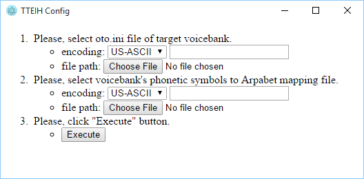
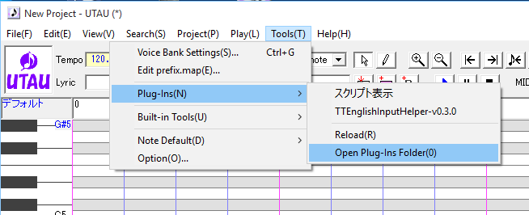
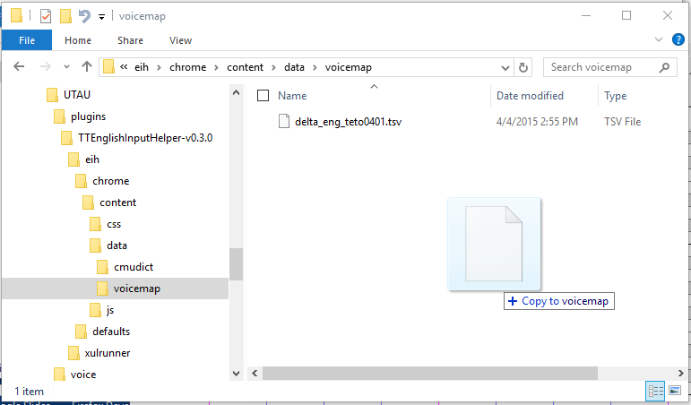
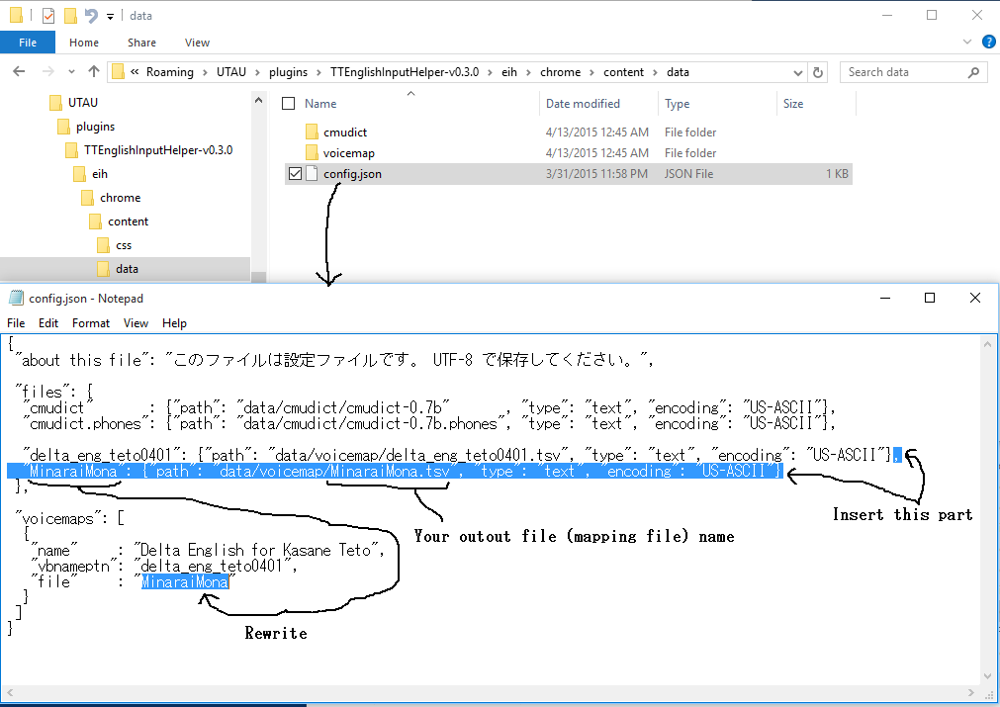

This is a tool to make a mapping file for TTEnglishInpurHelper. The mapping file is configuration to convert from Arpabet sequence to voicebank entry.
tteihconfig.zip (Published on 2016/01/17) Download
Expand tteihconfig.zip to any folder.
Delete expanded folder.
Execute "bin\tteihconfig.exe". And oparate using procedure given on the screen.

UTAU menu bar [Tools] → [Plug-Ins] → [Open Plug-Ins Folder]

Open TTEinglishInputHelper\chrome\contents\data\voicemap, and copy to the folder.


This file content is following rows set.
r＼c |
A B C D E F G H ... |
|---|---|
1 2 3 4 5 6 7 8 |
s\| -1 *replace* $$ ^- -1 *head* -$ -1 *tail* \s+ -1 *split* -1 *bypass* /NG/ @n g@ breath -1 *invalid* ~ 0 *ignore* tth 10 DH |
| Column | Value | Description |
|---|---|---|
| A | regexp | search pattern (JavaScript RegExp) |
| B | "-1" | |
| C | "*replace*" | |
| D | string | replace string (JavaScript String.prototype.replace) |
| Column | Value | Description |
|---|---|---|
| A | regexp | search pattern (JavaScript RegExp) |
| B | "-1" | |
| C | "*head*" |
| Column | Value | Description |
|---|---|---|
| A | regexp | search pattern (JavaScript RegExp) |
| B | "-1" | |
| C | "*tail*" |
for Delta (@delta_kuro) type english list (space separeted phonenic symbols).
| Column | Value | Description |
|---|---|---|
| A | regexp | search pattern (JavaScript RegExp) |
| B | "-1" | |
| C | "*split*" |
| Column | Value | Description |
|---|---|---|
| A | empty | |
| B | "-1" | |
| C | "*bypass*" | |
| D | previouse"/"body"/"next | arpabet patterns |
| E | name | voicebank entry name 1 |
| F | item1"="val1"/"item2"="val2"/"... | voice parameters 1 |
| G | name | voicebank entry name 2 |
| H | item1"="val1"/"item2"="val2"/"... | voice parameters 2 |
| : | : | : |
| Column | Value | Description |
|---|---|---|
| A | name | voicebank entry name |
| B | "-1" | |
| C | "*invalid*" |
| Column | Value | Description |
|---|---|---|
| A | symbol | phonenic symbol of voicebank |
| B | "0" | |
| C | "*ignore*" |
| Column | Value | Description |
|---|---|---|
| A | symbol | phonenic symbol of voicebank |
| B | weight (>0) | This value is using to resolve priority. |
| C | arpabet | arpabet symbol |